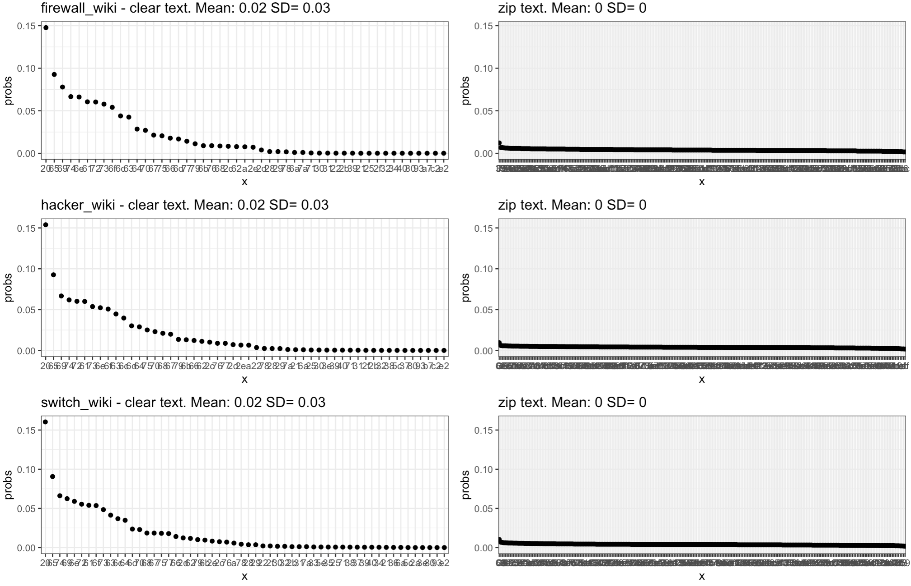

make_freq_df <- function(filename) {
test1 <- file(filename, open="rb", raw = TRUE)
t1_bytes <- t1_chars <- c()
while(TRUE) {
temp <- readBin(test1, what = "raw")
if(length(temp) == 0) break;
t1_bytes <- c(t1_bytes, temp)
t1_chars <- c(t1_chars, rawToChar(temp))
}
t1_df <- data.frame(sort(table(as.character.hexmode(t1_bytes)), decreasing = TRUE))
t1_df$char <- names(sort(table(t1_chars), decreasing = TRUE))
t1_df$probs <- as.numeric(prop.table(sort(table(t1_chars), decreasing = TRUE)))
names(t1_df) <- c("x", "y", "char", "probs")
# print(sum(t1_df$y))
t1_df$y <- t1_df$y/sum(t1_df$y)
t1_df
}About Shannon’s Information Entropy, applied to potentially detecting ciphered or compressed text compared to plain text.
(First entry of the new platform, let’s see how it goes.)
Shannon’s Information Entropy
Why try to understand that?
Long story short, Information Entropy is useful in quite a few Machine learning algorithms, and to name only a few, the following two use it directly:
Partitioning Trees (for nodes selection)
Logistic Regression (through log loss)
Doesn’t seem like much, said like that, but the Logistic Regression in turn can be used for… Neural Networks :)
How it is defined?
The best way I personally managed to try and understand information entropy is through the concept of compression and surprise.
A few helpful descriptions:
“[…] the expected amount of information needed to describe the state of the variable […]”
“Entropy is the measure of uncertainty of a variable. The more uncertain it is, the higher the entropy is.”
Here is the mathematical expression of it:
\[ H(X) = - \sum_{x \in X} p(x) log(p(x)) \]
From the Wikipedia (I mean, why not?), this is the part that somehow can make sense for an intuitive understanding of the concept:
“The information content, also called the surprisal or self-information, of an event \(E\) is a function which increases as the probability \(p(E)\) of an event decreases. When \(p(E)\) is close to 1, the surprisal of the event is low, but if \(p(E)\) is close to 0, the surprisal of the event is high. This relationship is described by the function
\[ log({1 \over p(E)}) \]
where \(log()\) is the logarithm, which gives 0 surprise when the probability of the event is 1. In fact, log is the only function that satisfies а specific set of conditions […]”
Application: Detecting cipher/zip on data streams
We’re aiming for this today:

The code
The code will be on my Github soon enough (if not already).
But for now, a few blocks of it:
The above function is a (bad, but functional) way of taking a file, reading it in “raw” format, and output byte-by-byte into a dataframe.
The first output column will be the “raw byte” (for text, the ASCII code, say “20” for space character).
The second column contains the Probability of appearance of a character, compared to the whole text being analysed (so, the frequency of it’s appearance).
The third column is for reference only, to “see” what the character would look like in plain text. Note that ” ” (space) and null would look similar… And so would other encoded bytes, but that’s not to worry for today.
With the above in mind, here is an output of plain and zip’ed text, along with the Shannon’s Entropy of it, correspondingly:
> firewall_wiki <- compare_clear_zip(1, wiki_pages_df)
x y char probs
1 20 0.14766670 0.14766670
2 65 0.09267745 e 0.09267745
3 69 0.07790143 i 0.07790143
4 74 0.06658562 t 0.06658562
5 6e 0.06621154 n 0.06621154
6 61 0.06050687 a 0.06050687
x y char probs
1 0 0.012244898 0.012244898
2 39 0.006722689 9 0.006722689
3 72 0.006722689 r 0.006722689
4 5f 0.006482593 _ 0.006482593
5 34 0.006242497 4 0.006242497
6 e4 0.006242497 \xe4 0.006242497
[1] "Entropy Plain text: 4.38674335811205"
[1] "Entropy Zip text: 7.9669387921095"In Plain text, the space character appears quite a bit. So do the letters e, i, t, n, a… (That’s for English, and remember these are small sample texts extracted from some Wikipedia pages…). Plain text has repetition on some characters (higher probability of appearance), with varying distributions (and uses fewer different bytes).
In Zip, the probabilities are each MUCH lower, and more even across all possible bytes. And that’s our KEY concept for today. Zip is compression, so all its characters have as few repetition as possible (i.e. low probability).
Interestingly, with the above approache, ciphered data would look like zip data.
OK, so let’s go back to our definitions of the first part:
“[…] When \(p(E)\) is close to 1, the surprisal of the event is low, but if \(p(E)\) is close to 0, the surprisal of the event is high[…]”
Hopefully we’re getting somewhere with understanding the concept. Uncommon characters will have higher “surprisal”, and lower probability of appearing.
Oh: And we should not be afraid of the math, it wasn’t that bad.
What does it mean in practice?
Well, it means that if you sample some bytes sniffed on a network, if you see seemingly random characters with no prevalence of a few ones, you know it’s not clear-text.
And yes, if you have the file extension, maybe this is all useless.
So why you would care? First, this is pretty cool. If you sample data (from a network stream, or bytes on a disk…), you can distinguish “automagically” what’s plain text and what’s ciphered/zip.
Maybe you can use that to detect covert channels out of packet capture?
Or maybe let your computer on its own decide to use one set of algorithm to analyse things when there is plain text, and use another set of characters when there is ciphered/compressed text (or images, etc.).
Conclusions
All this took me quite a while to really understand it. Or think I do, anyway :D
Today we’ve tried to explain the concept of information entropy through a simple application. If at this point my readers have gotten somewhat of an intuition about the concept, I’ll be very happy.
And the concept is quite relevant for Machine Learning, as we shall see in future posts.